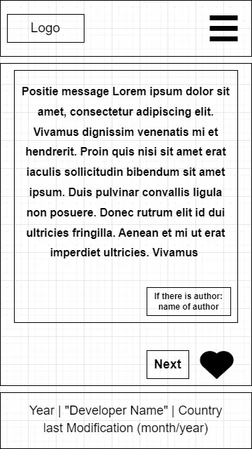
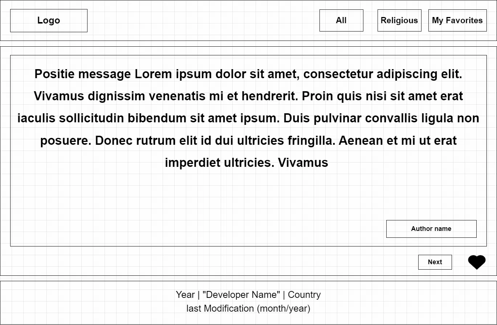

Site Name
getpositive
I choose this name because it relates with the core idea of the website. Seeing positive message makes the people getpositive.
Domain availability: Until this moment, the getpositive.net is disponible.
Site Purpose
The purpose of this website is delivery aleatory positive messages (religious or not) for the user. The user will be able to save her favority messages in localstore and see them. It will be able to share. The bigest service is to get access to positive messages and start having positive feelings.
Scenarios
- How can I see only the messages that I saved as "My Favorites"
- How can I filter to see only religious positive messages.
Color Schema
Charcoal blue - #2c3e50
Used for headings, main background, text-content in section, accent, and highlights
Sky blue - #A2D2FF
Used for border
white-smoke - #F5F5F5
Used for background section
Typography
Roboto - Used in the whole website.
Wireframe
Mobile View

Desktop View
